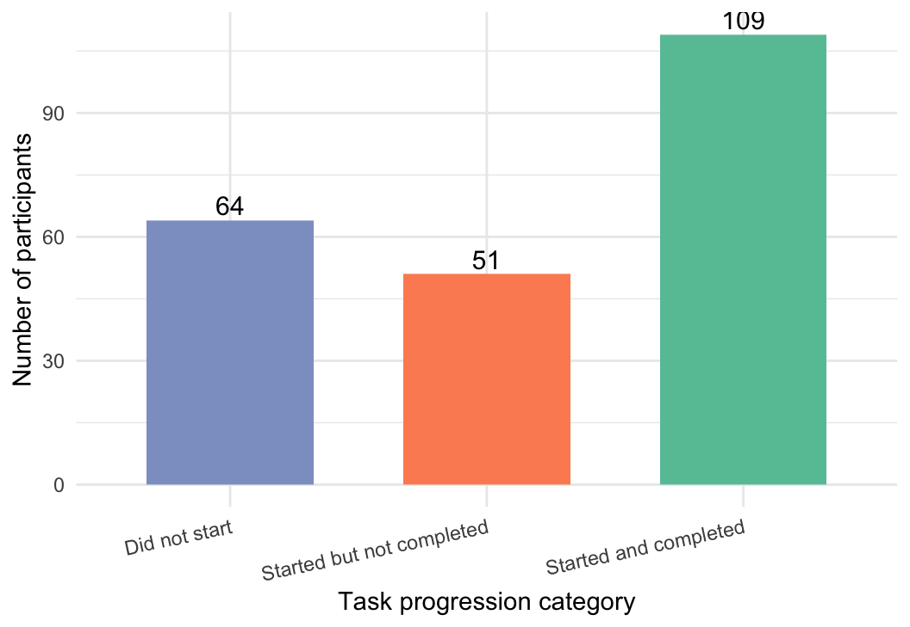
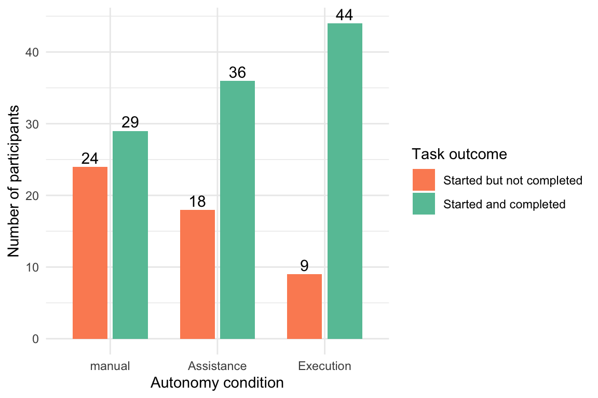
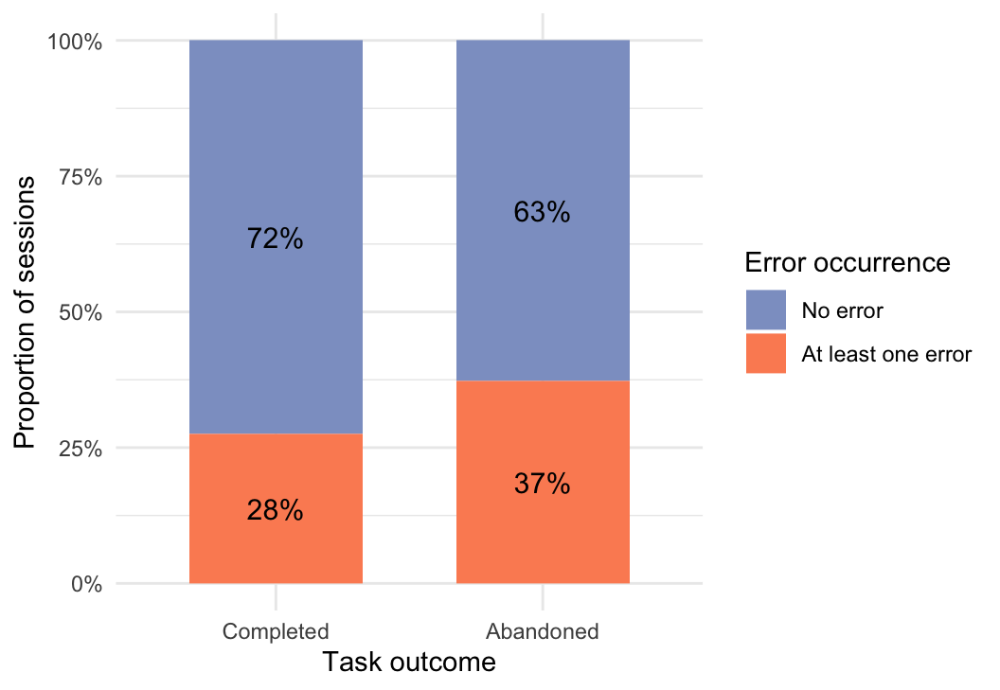
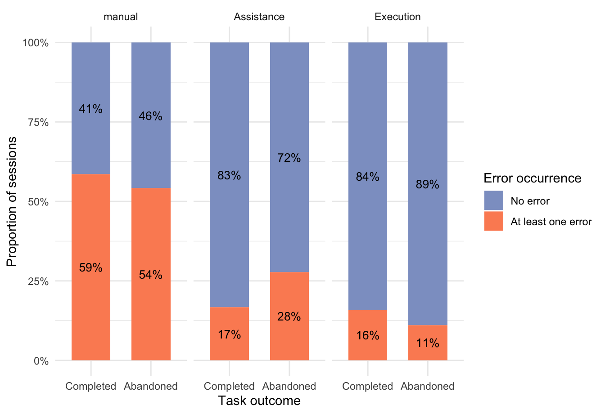
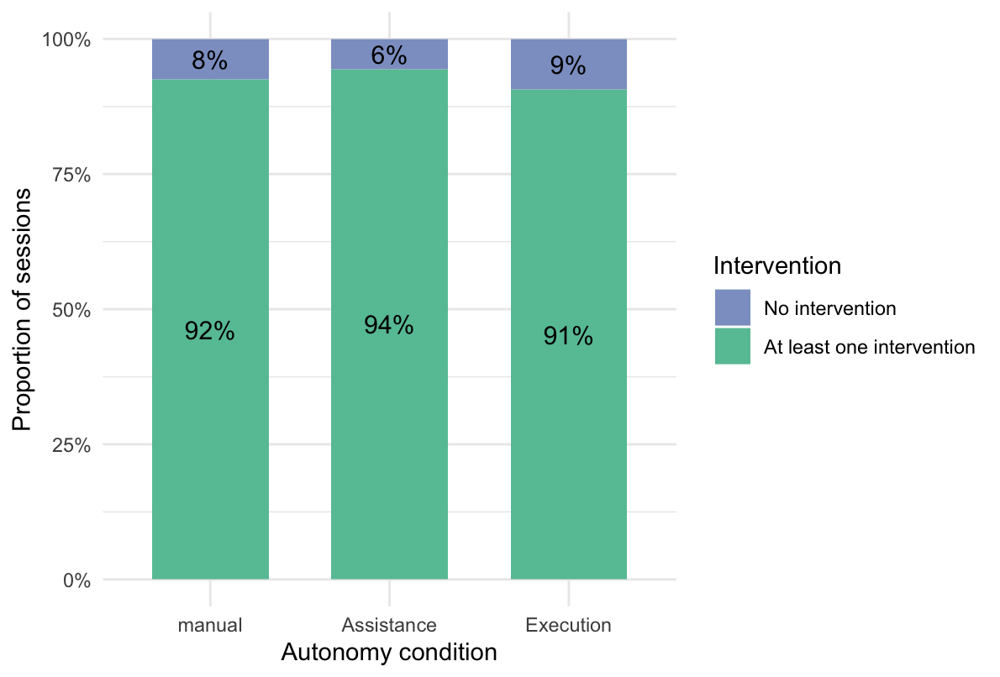
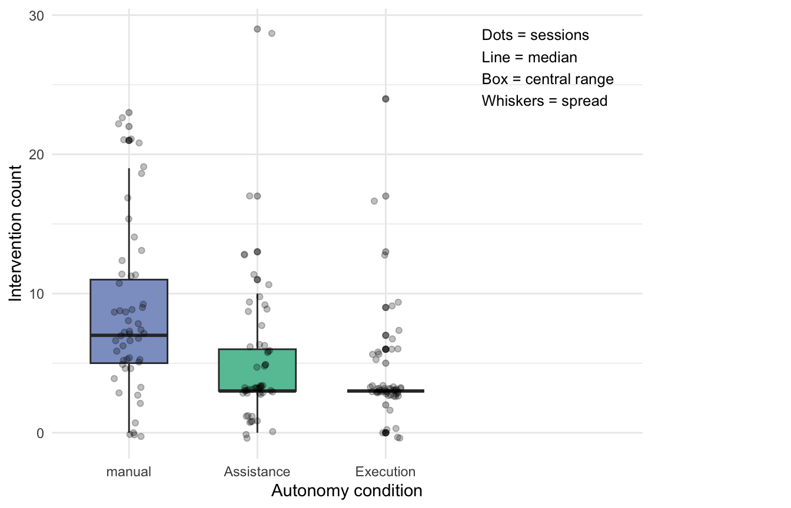

| Condition | Participants |
|---|---|
| Total | 228 |
| Assistance | 75 |
| Execution | 76 |
| Information | 4 |
| manual | 76 |
The Impact of AI Execution Autonomy on User Task Performance and Intervention Behavior in Digital Workflows
Introduction
Artificial intelligence (AI) systems are increasingly embedded in digital workflows, evolving from tools that provide decision support toward systems capable of autonomously executing actions. In many contemporary applications, AI no longer functions merely as a source of information or recommendations but actively participates in shaping and executing decisions. This shift from assistance to autonomous execution fundamentally changes the distribution of control, responsibility, and risk between human users and technical systems.
The distribution of decision authority between humans and automated systems has long been a central concern in human–automation interaction research. Early work by Sheridan and Verplank (1978), as well as later frameworks by Parasuraman, Sheridan, and Wickens (2000), conceptualize automation as a continuum of autonomy, ranging from full human control to full system control. These models demonstrate that different levels of automation can significantly influence human performance, error behavior, and reliance on automated systems. However, much of this research has primarily focused on assistive systems in which humans retain primary decision authority.
More recent research in human–computer interaction has increasingly emphasized subjective constructs such as trust, perceived usefulness, and user satisfaction (Lee & See, 2004; Hoff & Bashir, 2015). While these perspectives provide valuable insights, they offer limited understanding of how users behave in concrete task execution scenarios, particularly in systems where AI assumes execution authority. As a result, there remains a lack of empirical, behavior-based evidence on how execution autonomy affects observable task outcomes and user intervention behavior in real interaction contexts.
This study addresses this gap by investigating how different levels of AI execution autonomy affect user task performance and intervention behavior in AI-assisted digital workflows. Specifically, three autonomy levels are examined—manual, assistance, and execution—which represent distinct distributions of decision authority between the user and the system. The analysis focuses on measurable behavioral outcomes, including task completion time, detected errors, abandonment, and intervention frequency, enabling a systematic comparison across conditions.
This leads to the following research question:
“How does the level of AI execution autonomy affect user task performance and intervention behavior in AI-assisted digital workflows?”
The study adopts a controlled experimental design in which user interactions are captured through system-generated logs. Instead of relying on self-reported measures, behavioral data is used to assess how users perform tasks and how often they intervene under different autonomy conditions. By operationalizing AI execution autonomy as a system-level property—rather than as a feature of a specific model—the study isolates the effect of execution authority within a controlled task environment. This reflects how AI systems are typically implemented in real-world applications, where autonomy emerges from system design rather than from the underlying model alone.
The contribution of this study lies in providing a behaviorally grounded, log-based analysis of AI execution autonomy. By capturing real user interactions in a controlled setting, the study enables a systematic comparison of task performance and intervention behavior across autonomy levels. The findings contribute to a more empirical understanding of how autonomy shapes human–AI interaction and provide practical insights for designing AI-assisted systems that balance efficiency and user control.
2 Theory
2.1 AI Execution Autonomy
The concept of automation has long been described as a continuum reflecting different levels of system involvement in decision-making. Early frameworks conceptualize automation as a spectrum ranging from full human control to full system control, emphasizing how the allocation of decision authority affects human performance and behavior (Sheridan & Verplank, 1978; Parasuraman et al., 2000).
Building on this perspective, AI execution autonomy can be defined as the extent to which a system is capable of independently determining and executing task-related actions within a workflow. In contrast to traditional assistive systems, execution-oriented AI systems increasingly assume responsibility not only for providing information but also for generating and implementing decisions.
In this study, three levels of execution autonomy are distinguished: manual, assistance, and execution. These levels represent qualitatively different distributions of control between the user and the system.
In the manual condition, all task-related decisions are made by the user, while the system functions solely as a validation mechanism by enforcing constraints and displaying error messages. In the assistance condition, the system generates a valid default configuration and supports the user through suggestions, while allowing full modification via editable parameters. In the execution condition, the system autonomously determines all task parameters and presents a final configuration, restricting user interaction to acceptance, rejection, or regeneration of outcomes. These conditions enable a systematic comparison of how different levels of autonomy influence user behavior during task execution.
2.2 User Task Performance
User task performance refers to the extent to which users are able to successfully and efficiently complete a task within a given system environment. In the context of human–AI interaction, performance is not solely determined by user capabilities but emerges from the interaction between user actions and system behavior (Parasuraman et al., 2000).
To capture performance in an objective and observable manner, this study focuses on behavioral outcome measures derived from system interaction logs. Specifically, user task performance is operationalized using three indicators: task completion time, error occurrence, and task abandonment.
Task completion time reflects efficiency and is defined as the duration between the initiation and completion of a task. Error occurrence captures whether users perform invalid actions that violate system constraints, such as selecting incompatible exam combinations or exceeding allowed limits. Task abandonment represents task failure and is defined as cases in which users initiate but do not complete the task.
By relying on log-based behavioral data rather than subjective self-reports, this study provides a more direct assessment of performance as it occurs during real system interaction.
2.3 Intervention Behavior
In addition to task performance, user interaction with AI systems can be characterized by the extent to which users intervene in system-generated processes. Intervention behavior reflects the degree to which users actively modify, override, or reject system outputs during task execution.
In human–automation interaction research, intervention is closely related to monitoring and control processes, particularly in situations where users retain partial authority over automated systems (Lee & See, 2004). High levels of intervention may indicate reduced reliance on the system, perceived inadequacy of system outputs, or a need for greater user control.
In this study, intervention behavior is operationalized through observable interaction events captured in system logs. These include edits of system-generated configurations, overrides of suggested parameters, and rejection or regeneration of system outputs (e.g., skipping a suggested configuration). These measures allow for a quantitative assessment of how frequently and in what ways users intervene under different levels of AI execution autonomy.
2.4 Research Gap and Hypotheses
Despite extensive research on human–AI interaction, existing literature has primarily focused on subjective constructs such as trust, perceived usefulness, and user attitudes toward automated systems (Lee & See, 2004; Hoff & Bashir, 2015). While these approaches provide valuable insights into user perception, they offer limited understanding of how users behave during actual task execution.
Moreover, prior research has largely concentrated on assistive systems, where users retain primary decision authority, rather than execution-oriented systems in which AI assumes control over task outcomes. As a result, there remains a lack of empirical, behavior-based evidence on how different levels of AI execution autonomy influence observable user performance and intervention patterns in practical workflows.
To address this gap, the present study examines the behavioral effects of varying levels of AI execution autonomy using log-based interaction data. Based on this framework, the following hypotheses are proposed:
H1: Higher levels of AI execution autonomy improve user task performance, as reflected in reduced completion time, lower error occurrence, and lower abandonment rates. H2: Higher levels of AI execution autonomy reduce user intervention during task execution.
3 Methods
3.1 Study Design
This study employed a between-subject experimental design with three conditions representing different levels of AI execution autonomy: Manual, Assistance, and Execution.
Participants were randomly assigned to one of the three conditions and completed a single task within the assigned condition. The between-subject design was chosen to avoid learning effects and to ensure that user behavior was not influenced by prior exposure to other autonomy levels.
3.2 Prototype and Logging
A web-based exam registration system was developed to simulate a realistic academic workflow. The system required users to select a semester, choose an exam period, and configure a valid set of exams under predefined constraints.
User interactions were logged using a backend logging system implemented with Supabase. The logging system captured event-level interaction data, including:
• user actions (e.g., TASK_STARTED, TASK_COMPLETED, ERROR_SHOWN, FIELD_EDIT, OVERRIDE, AI_SUGGESTION_REJECTED)
• timestamps (client-side and server-side)
• session identifiers
• assigned condition (mode)The collected data was stored as structured event logs and exported as CSV files for analysis. This approach enabled a detailed reconstruction of user behavior during task execution.
3.3 Variables
The independent variable (IV) in this study was the level of AI execution autonomy, with three levels:
• Manual
• Assistance
• ExecutionThe dependent variables (DVs) captured objective behavioral outcomes derived from interaction logs:
• **Task completion time**
• **Error occurrence**
• **Task abandonment**
• **Intervention behavior**These variables were operationalized based on observable interaction events.
3.4 Sample
A total of 231 participants were included in the study. The participant distribution across conditions is shown in Table 1.
An important issue in the dataset is the presence of the “Information” mode, which theoretically should not exist as an active interaction condition. Therefore, it is necessary to investigate why this mode appears in the logs and what type of events have been recorded under it. To assess this, a validity check was conducted by filtering all entries associated with the “Information” mode and inspecting their session IDs and logged actions.
# A tibble: 4 × 2
session_id action
<chr> <chr>
1 S-7QR92FMR PAGE_VIEW
2 S-KY2JLRYQ PAGE_VIEW
3 S-NT977W23 PAGE_VIEW
4 S-OQKZ8TJ1 PAGE_VIEWThe inspection showed that the “Information” mode contained only four log entries, all of which were recorded as PAGE_VIEW events. This indicates that these entries reflect passive page access rather than meaningful task-related interaction. Therefore, the “Information” mode was treated as invalid and excluded from further analysis to ensure data quality, cleanliness and consistency.
| Condition | Participants |
|---|---|
| Total | 224 |
| Assistance | 75 |
| Execution | 76 |
| manual | 76 |
Repeated participation was intended to be prevented by the system design. However, to ensure data validity, an additional check was conducted at the session level, since repeated participation may still occur despite implemented controls in the experimental environment. Therefore, sessions were used to verify that each participant contributed only one observation and to avoid overcounting repeated entries.
| Condition | Sessions |
|---|---|
| Assistance | 75 |
| Execution | 76 |
| manual | 76 |
The results show a balanced distribution of unique sessions across conditions, indicating that each participant contributed only one observation and that no overcounting occurred.
3.5 Measures
All dependent variables were derived from system-generated event logs and aggregated at the session level.
Task completion time was defined as the time interval between task start and task completion within a session. Specifically, it reflects the elapsed time between the first TASK_STARTED event and the corresponding TASK_COMPLETED event. As this measure requires a valid endpoint, it was calculated only for sessions that were completed successfully.
To complement this efficiency-based measure, task abandonment was included as an indicator of unsuccessful task progression. Task abandonment was defined as sessions in which users initiated but did not complete the task. Thus, a session was classified as abandoned when a TASK_STARTED event was recorded without a corresponding TASK_COMPLETED event. Figure 1 provides an overview of overall task progression across all 224 participants. It shows the number of participants who entered the system but did not start the task, those who started the task but did not complete it, and those who started and successfully completed the task.

Building on this general overview, Figure 1 first showed overall task progression across the full sample and indicated that 64 participants did not start the task at all. The following analysis therefore focuses only on the 160 participants who initiated the task. Among these started sessions, the aim is to examine how task outcomes were distributed across the three autonomy conditions by distinguishing between participants who started but did not complete the task and those who started and successfully completed it. To display these condition-specific differences more clearly, a grouped bar chart was used in Figure 2.

Figure 2 shows the distribution of task outcomes among participants who started the task, separated by autonomy condition. Across all three conditions, completed sessions outnumbered abandoned sessions. The Execution condition showed the highest number of completed sessions and the lowest number of abandoned sessions, whereas the manual condition showed the highest number of abandoned sessions.
Error occurrence was operationalized through ERROR_SHOWN events. Sessions were included in this analysis if a task had been started, regardless of whether the task was later completed or abandoned. This approach ensured that validation problems encountered during task execution were captured independently of final task outcome. Abandoned sessions were retained in the analysis because errors themselves may have contributed to task abandonment. We further examined whether error occurrence differed between completed and abandoned sessions. As shown in Figure 3, a 100% stacked bar chart was used to compare the proportion of sessions with and without errors across the two task outcomes. This visualization makes it possible to assess what percentage of completed sessions contained at least one error and what percentage of abandoned sessions contained at least one error.

Figure 3 shows the proportion of sessions with and without errors across completed and abandoned started sessions. A higher proportion of abandoned sessions contained at least one error (37%) compared with completed sessions (28%). This pattern suggests that validation errors may have contributed to task abandonment, although no causal conclusion can be drawn from this descriptive comparison alone. To further refine this analysis, error occurrence was examined separately for each autonomy condition. This makes it possible to compare how the proportion of sessions with and without errors differed between completed and abandoned sessions within the Manual, Assistance, and Execution conditions.

Figure 4 shows that error occurrence varied substantially across autonomy conditions. The Manual condition displayed the highest proportion of sessions with errors in both completed and abandoned sessions, whereas the Execution condition showed the lowest error proportions overall. The Assistance condition fell between these two extremes. At the same time, the relationship between error occurrence and task outcome was not uniform across conditions, suggesting that the role of validation errors may differ depending on the level of AI execution autonomy.
Intervention behavior was operationalized as active user interference with the task configuration or the system output. At the session level, intervention was defined based on the occurrence of FIELD_EDIT, OVERRIDE, and AI_SUGGESTION_REJECTED events. For the following descriptive overview, a binary intervention indicator was used to distinguish between sessions with at least one intervention and sessions without any intervention. Only started sessions were included in this analysis, regardless of whether the task was later completed or abandoned. Intervention should be measured for all started sessions, because it reflects user behavior during task execution rather than successful task completion. Figure 5 shows the proportion of sessions with and without intervention across the three autonomy conditions.

Figure 5 shows that intervention occurred in the large majority of started sessions across all three autonomy conditions. The proportion of sessions with at least one intervention was consistently high in the Manual, Assistance, and Execution conditions, indicating that user intervention was common regardless of autonomy level. At the descriptive level, only minor differences between conditions were observed.
This pattern may indicate that the binary intervention measure captured a very broad range of user actions, thereby limiting its ability to differentiate more clearly between autonomy conditions. Alternatively, it may suggest that intervention was generally required across conditions due to the structure of the task. These interpretations are considered in the discussion.
Figure 6 provides a more fine-grained view of intervention behavior by showing the distribution of intervention counts across the three autonomy conditions. In contrast to the binary intervention indicator used in Figure 5, this analysis captures how often users intervened within a session. Only started sessions were included, as intervention could only occur once task execution had begun.
